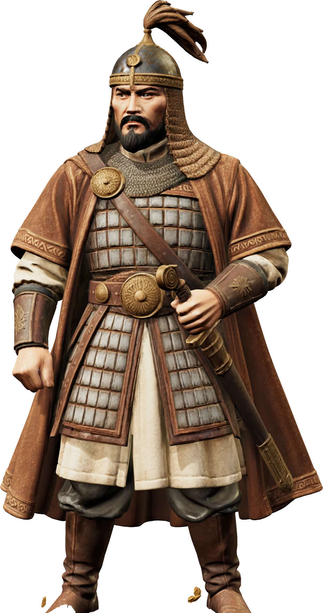

Өмірбаян · Биография
Қанжығалы Бөгенбай батыр
Канжыгалы Богенбай батыр (Бөгенбай Ақшаұлы)
Жоңғар шапқыншылығына қарсы күрестің бас қолбасшыларының бірі, Абылай ханның сенімді серігі.
Один из главных полководцев казахов в войне с джунгарами, соратник Абылай хана.

Бөгенбай Ақшаұлы — Орта жүз Арғын тайпасының Қанжығалы руынан. Шамамен 1680 жылы Сырдария өңірінде туған деген дерек бар. Әкесі Ақша — Тәуке хан тұсындағы беделді тұлға: дереккөздер бойынша хан оған үлкен әскер басқаруды сеніп тапсырған.
Происходит из рода Канжыгалы племени Аргын Среднего жуза. По данным источников, родился около 1680 года близ Сырдарьи. Его отец Акша был влиятельным человеком при хане Тауке и, по преданию, командовал большим войском.
Шешендігі мен ақыл-парасатын әкесінен дарытқан. Кейбір деректерде Тәуке ханның балаларымен бірге тәрбиеленгені айтылады.
Красноречие унаследовал от отца. По некоторым сведениям, воспитывался вместе с детьми хана Тауке.
Өмір жолы · Хронология
1710
Қарақұм жиыны даулы · спорно
Үш жүздің өкілдері бас қосқан жиында жалпы қазақ жасағын басқаруға сайланғаны айтылады. Жиындағы атақты сөзді оған телу кейбір тарихшылар тарапынан даулы саналады.
На съезде представителей трёх жузов, по преданию, избран предводителем общеказахского ополчения. Приписываемая ему знаменитая речь оспаривается частью историков.
1723
Ақтабан шұбырынды
Жоңғар шапқыншылығының ең ауыр жылдары. Бөгенбай ел қорғаған батырлардың қатарында жасақ бастады.
Самые тяжёлые годы джунгарского нашествия. Богенбай — среди батыров, возглавлявших оборону.
1728
Бұланты шайқасы
Бұланты өзені бойындағы жеңісте қазақ жасағын бастаушылардың бірі болғаны айтылады.
Называется одним из предводителей казахского войска в победе на реке Буланты.
1729–1730
Аңырақай шайқасы даулы · спорно
Үш жүз жасағы бірігіп, жоңғар әскерін талқандаған ұлы шайқас. Аңыз бойынша біріккен қолды бастағандардың бірі — Бөгенбай. Шайқас туралы құжаттық деректер аз.
Великая битва, где объединённое войско трёх жузов разбило джунгар; по преданию, Богенбай — один из её предводителей. Документальных источников о битве немного.
1731
Ресейге бодандық
1731 жылғы 10 қазанда Ресей протекторатын ресми қабылдаған алғашқы қазақ старшиналарының бірі болды.
10 октября 1731 года одним из первых казахских старшин официально принял российский протекторат.
1740–1770
Абылайдың серігі
Абылай ханның ақылшысы әрі қолбасшысы ретінде жоңғарларға қарсы күресті жалғастырды, қазақтарды жоңғар билігінен азат етуге үлес қосты.
Соратник и полководец Абылай хана; продолжал борьбу с джунгарами и сыграл важную роль в освобождении казахов от их власти.
1778
Өмірінің соңы
Торғай өңірінде дүниеден өтті.
Скончался в Тургайской долине.
Тарихшылардың пікірі
Бөгенбай туралы деректердің көбі жыраулар жыры, шежіре және ел аузындағы аңыздар арқылы жеткен. Ақтөбелік профессор Айсұлу Тасымова оның кейбір еңбектерін, соның ішінде 1710 жылғы Қарақұм жиынындағы атақты сөзді оған телуді даулы деп санайды. Аңырақай шайқасының нақты барысы да құжаттармен толық расталмаған.
Многое о Богенбае известно из жырау, шежіре и народных преданий. Историк Айсулу Тасимова (Актобе) считает спорной часть приписываемых ему заслуг, в том числе речь на Каракумском съезде 1710 года; ход Анракайской битвы тоже документально подтверждён не полностью.
Мұрасы
Бөгенбай батыр — ел бірлігі мен ерліктің символы. Оның есімі қалалардағы көшелер мен даңғылдарға, елді мекендерге берілген; бейнесі тарихи кітаптар мен фильмдерде, соның ішінде Аңырақай шайқасы туралы туындыларда сомдалады.
Богенбай батыр — символ единства и мужества. Его имя носят улицы и проспекты, населённые пункты; его образ — в книгах и фильмах, в том числе об Анракайской битве.
- • «Бөгенбай Ақшаұлы» — Қазақстан: Ұлттық энциклопедия, 1999, 394–395 б.
- • Bogenbay Batyr — Wikipedia
- • Актюбинский профессор поставила под сомнение заслуги Богенбай-батыра — Tengrinews
- • Анракайская битва — Рувики
Даталар шамамен берілген; ел аузындағы деректер мен құжаттар әр түрлі болуы мүмкін. · Даты приблизительные; сведения преданий и документов могут расходиться.